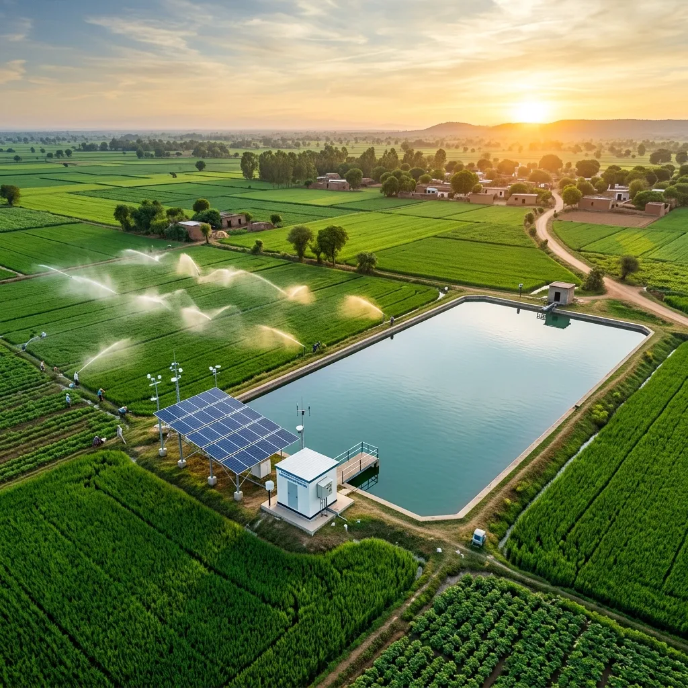
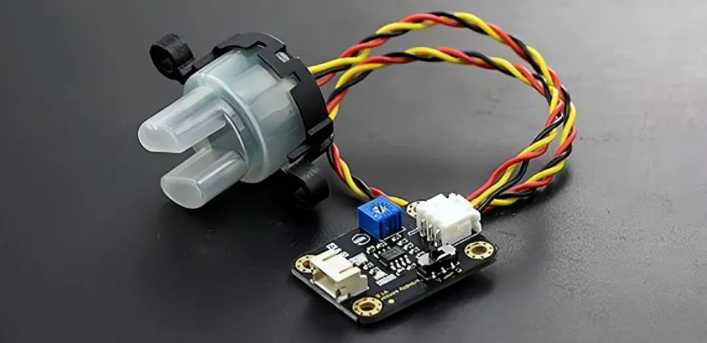
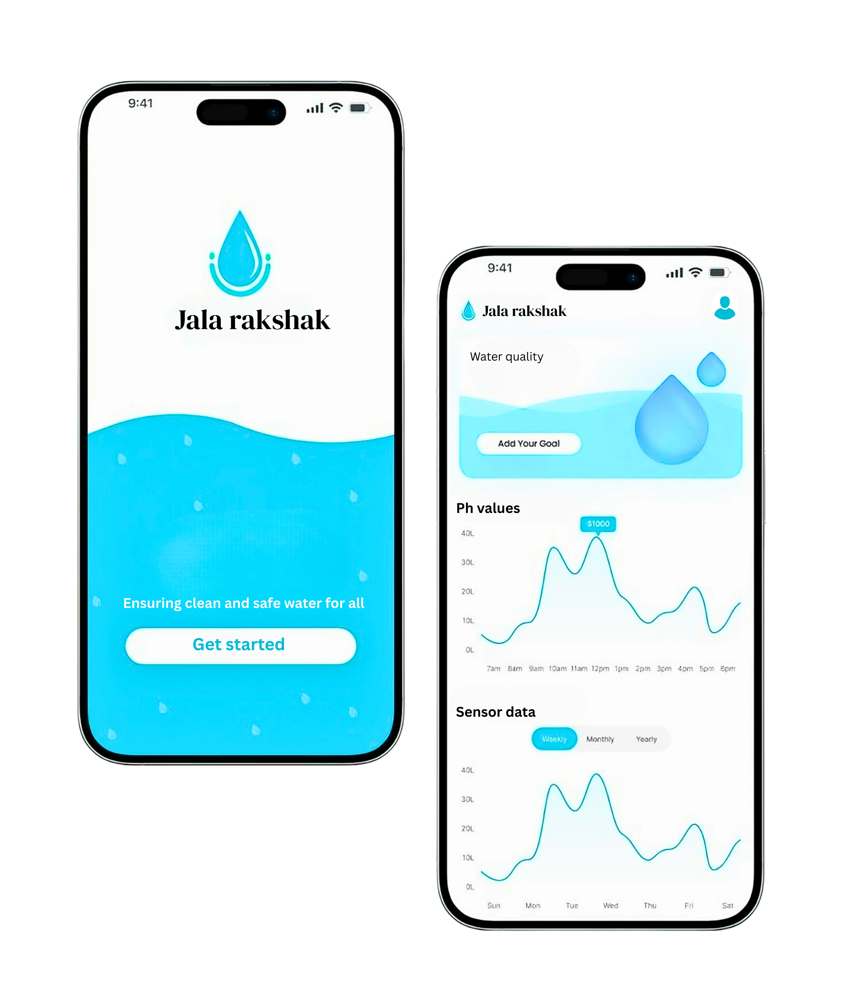
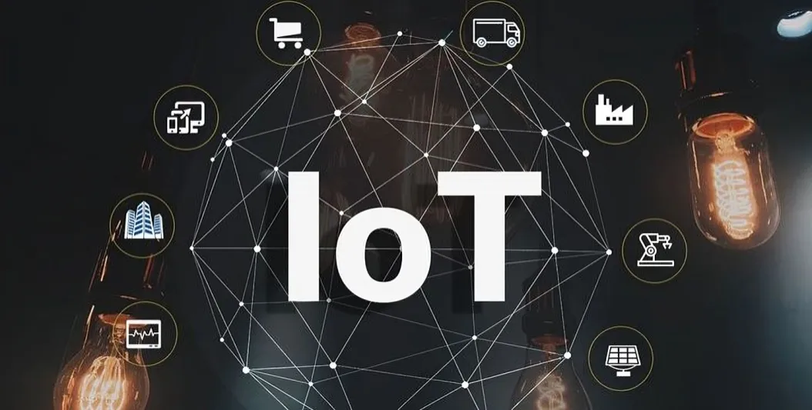
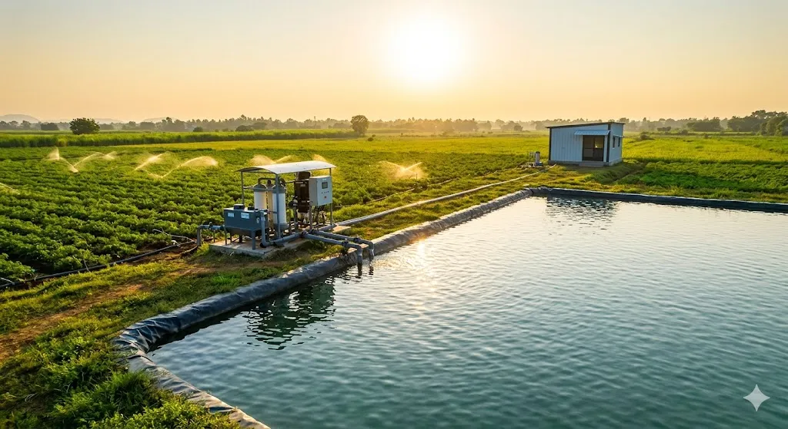
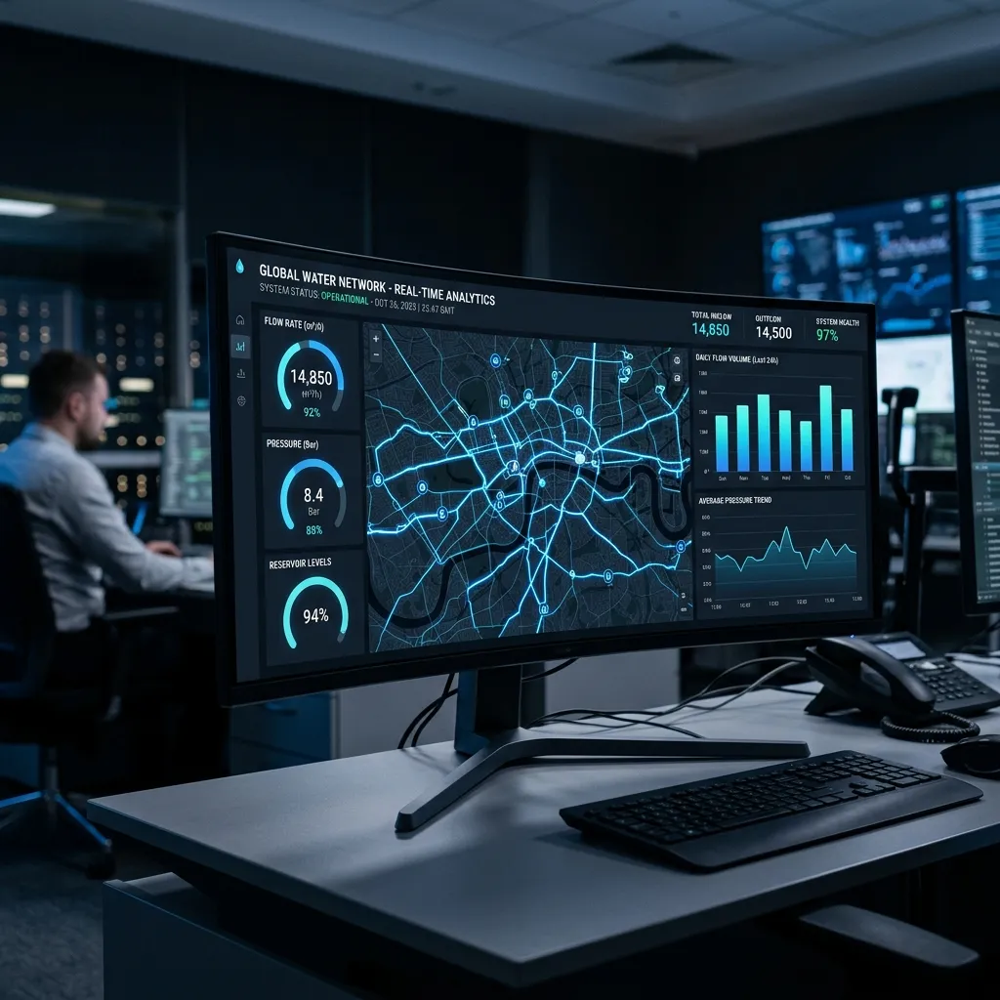

AI-POWERED ENTERPRISE SOFTWARE
Accelerate enterprise growth with intelligent edge IoT solutions
Deliver real-time water monitoring, collaborate seamlessly, and automate infrastructure safety—all on an IoT platform built in India.
For a brighter future
At Jal Rakshak, we empower Solutions by unlocking their potential through quality devices. We harness smart technology to protect water sources, support communities, and create a healthier environment.
Explore SolutionsOur Mission & Vision
Our Mission
We specialize in developing IoT-based systems that provide real-time, accurate, and actionable water quality data to help safeguard public health and promote sustainable water resource use.
Our Vision
To be a global leader in smart water quality monitoring by innovating sustainable, reliable, and scalable technologies that ensure safe and clean water for all, protecting ecosystems through data-driven environmental stewardship.

The Limits of Legacy Systems
India is facing a severe and escalating water shortage, with precious resources becoming increasingly polluted. Traditional water quality monitoring methods are dangerously inadequate.
- ✕ Slow & Expensive: Manual sampling is costly and delivers delayed results, making proactive prevention impossible.
- ✕ Geographically Limited: Hard-to-reach rural areas and vast aquatic bodies remain completely unmonitored.
- ✕ No Real-time Insights: Authorities react to contamination events after they happen, jeopardizing aquatic and public health.

AI-Powered Autonomous Monitoring Grid
We completely engineer the gap with a revolutionary IoT-based 4G/5G intelligence grid. Our autonomous edge devices operate completely off-grid to safeguard public infrastructure instantly.
Install the
Device.
01
Smart sensor kit
Attach our smart sensor kit to any
water source in
minutes.


Track Data
Remotely.
02
Automatic Data Sync
Data is sent automatically to the
cloud for access
anytime, anywhere.

Analyze
Information.
03
Impactful Decisions
Get alerts when values exceed limits
and track trends
over time.
Deliver
results.
04
Audit-ready reports
auto-generated for your board,
regulators, and compliance
team.



Who We Serve
- ● Government Bodies & Water Authorities
- ● Environmental Monitoring Agencies
- ● Pharmaceutical & Manufacturing Industries
- ● Agriculture & Irrigation Sectors
- ● Smart City Projects & NGOs
Our Product Ecosystem
From safeguarding water quality to protecting lives on the road — our deep-tech solutions are engineered to solve critical real-world challenges at scale.

Jal Rakshak
Smart Water Intelligence Platform
Advanced IoT-enabled systems for monitoring water quality, usage, flow, leakage, and environmental conditions in real time — protecting every drop with cloud analytics and AI-driven insights.

S.H.I.E.L.D.
Smart Health Intelligence for Ergonomic & Live Driving
AI-driven health and speed intelligence system that continuously monitors vibration exposure and provides real-time personalized safety guidance for commercial drivers and two-wheeler users.

Energy Monitoring
Smart Monitoring for Smarter Energy Decisions
Detailed insights into energy consumption patterns across your facility. Identify inefficiencies, optimize usage, reduce energy costs, and enhance sustainability.
Frequently Asked Questions
Everything you need to know about our water quality monitoring, energy analytics, and IoT integration capabilities.
Our Journey & Entity.
SK Jalrakshak Innovations Private Limited was founded by a team of dedicated engineers with a singular mission: to protect our planet's most vital resource—clean water. We engineer intelligent, cost-effective, and highly scalable IoT systems designed to continuously monitor water quality across lakes, rivers, and municipal tanks. By seamlessly bridging hardware edge-computing with cloud-based predictive analytics, we empower communities, governments, and enterprises to make proactive, data-driven decisions that ensure absolute water safety and sustainability.
Leadership
Expertise in IIoT engineering and embedded systems. Focused on real-time environmental monitoring.

IoT & GNSS Expert, Ph.D. with Gold Medal. Authored 100+ publications and holds 6 patents.
Our Partners
Trusted by industry leaders, our partners drive innovation and success with us.
Electricals

How Can We Assist You Today?
Have questions, need assistance, or want to provide feedback? We're here to help! Reach out to us, and our team will respond promptly to address your concerns.